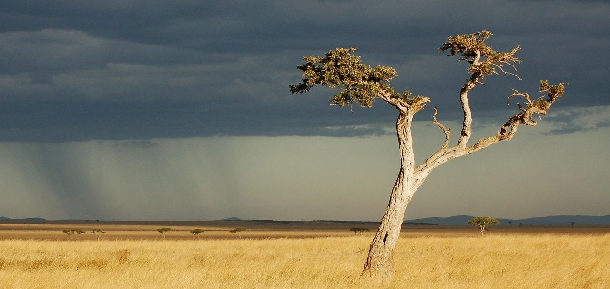

À propos
Près de 20 ans dans les programmes d'eau, d'assainissement et de climat
Je suis conseiller en eau et climat, basé à Berlin. Je travaille sur les systèmes qui assurent les services d'eau, d'assainissement et d'hygiène (EAH), et sur leur financement, y compris par les fonds climatiques.
J'ai passé 15 ans à l'UNICEF à des postes de responsabilité, pays et régionaux, en Afrique. J'ai dirigé les programmes pays EAH en Côte d'Ivoire, au Burkina Faso et au Burundi, puis, en tant que spécialiste régional EAH pour l'Afrique de l'Ouest et du Centre (2023 à 2025), j'ai fourni une assistance technique à 24 bureaux pays de l'UNICEF sur les systèmes sectoriels, la résilience climatique et le financement.
Travaux choisis
L'assainissement total piloté par la communauté à l'échelle nationale (Burkina Faso, 2015 à 2019)
L'assainissement total piloté par la communauté (ATPC) est une approche dans laquelle les communautés mettent elles-mêmes fin à la défécation à l'air libre, sans latrines subventionnées. J'ai dirigé le travail de l'UNICEF pour l'introduire au Burkina Faso : j'ai mis en place un projet pilote et documenté ses résultats, et organisé une visite de Kamal Kar, à l'origine de l'approche, avec une rencontre avec deux ministres. Le gouvernement a constaté que l'approche fonctionne et a commencé à la mettre en œuvre à grande échelle.
Blue Soap : du savon abordable pendant la pandémie de COVID-19 (Burundi, 2020)
Le lavage des mains était nécessaire à l'échelle nationale, et le savon était hors de portée de nombreuses familles. J'ai conçu et dirigé Blue Soap, un partenariat public-privé avec le principal fabricant de savon du Burundi, subventionné par l'UNICEF, la Banque mondiale et d'autres partenaires. Grâce à ce partenariat, 10 millions de pains de savon par mois ont été vendus aux consommateurs à la moitié du prix du marché.
L'eau et l'assainissement dans le plan climat national du Burundi (2021)
J'ai conçu et dirigé The Climate Crisis in Burundi, une analyse de l'UNICEF sur les conséquences du changement climatique pour les enfants. En 2021, l'eau, l'assainissement et l'hygiène ont été inscrits dans la contribution déterminée au niveau national (CDN) du Burundi, son plan climat national.
Suivre le financement de l'eau et de l'assainissement (2023 à 2025)
J'ai été le point focal régional de l'UNICEF pour la collaboration avec l'Organisation mondiale de la Santé sur les comptes EAH, qui retracent le financement des services d'eau et d'assainissement, et j'ai appuyé leur préparation dans cinq pays.
Une méthode systématique pour les justifications climatiques (Afrique de l'Ouest et du Centre, 2025)
L'appui aux bureaux pays sur les justifications climatiques était jusque-là ponctuel. J'ai mis en place et supervisé un programme régional dans le cadre duquel l'Institut international de l'eau de Stockholm (SIWI) et l'Institut suédois de recherche environnementale (IVL) ont appliqué une méthode de justification climatique par étapes dans 16 pays. Neuf justifications étaient achevées lorsque j'ai quitté ce poste.
Les allégations des entreprises sur la restitution d'eau (recherche de MBA)
De plus en plus d'entreprises affirment restituer l'eau qu'elles utilisent. Ma recherche de MBA à l'Université de Bradford évalue ces allégations au regard de critères d'intégrité adaptés de la compensation carbone.
Autres travaux
Au Burundi, j'ai représenté l'UNICEF en tant que chef de file des partenaires au développement au sein du groupe sectoriel national EAH pendant trois ans. J'ai coordonné une note conceptuelle multipays pour le Fonds vert pour le climat sur la sécurité de l'eau au Sahel, avec la Banque africaine de développement et cinq gouvernements. J'ai aussi fourni un appui technique sur la justification climatique, l'alignement avec le plan national d'adaptation et les données de vulnérabilité pour la proposition de financement de la République centrafricaine en faveur d'un secteur EAH résilient au climat, approuvée par le Conseil du Fonds vert pour le climat en juillet 2026 sous la forme d'un don de 69,1 millions de dollars des États-Unis.
Auparavant, j'ai travaillé sur la réforme du secteur de l'eau au Burundi avec la Deutsche Gesellschaft für Internationale Zusammenarbeit (GIZ), et sur les droits humains à l'eau et à l'assainissement au Haut-Commissariat des Nations Unies aux droits de l'homme, à Genève.
- Basé à
- Berlin, Allemagne
- Langues
- anglais, français, allemand
- Formation
- MBA, University of Bradford, 2027 (en cours)
- MSc in Analytics, Georgia Institute of Technology, 2022
- Master (M.A.) de sociologie, Université de Bielefeld, 2005
- Certificats
- Certified Expert in Financing NDCs, Frankfurt School of Finance and Management
- Certified Expert in Climate Adaptation Finance, Frankfurt School of Finance and Management
- Certificate in Geo-Visualisation, Université d'Amsterdam
Voyons ensemble comment je peux vous aider.
Décrivez le problème à résoudre et votre calendrier.
Prendre contact